Pets
Let them be pets.
We’ll handle
the mess.
A waterproof layer under every feeding mat, litter mat and pee pad keeps liquids from reaching your floor.
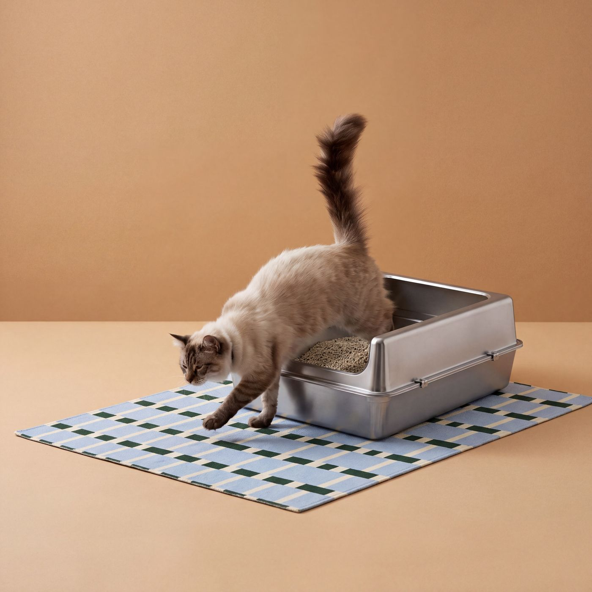
Ways to use it
Wherever you need it
From the food bowl to the sofa, the same mat adapts to every spot they claim.
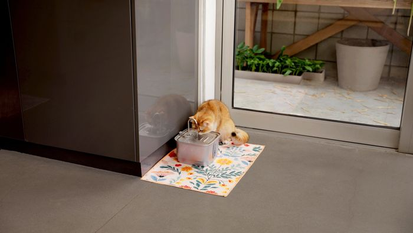
Feeding mat
Keeps the feeding corner clean and composed.
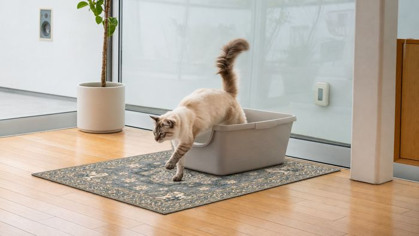
Litter mat
Traps stray litter so floors stay clean.
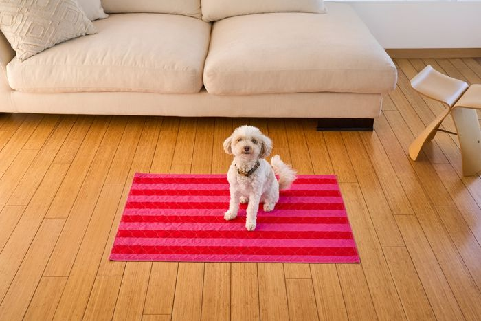
Reusable pee pad
A washable alternative to disposable pads.
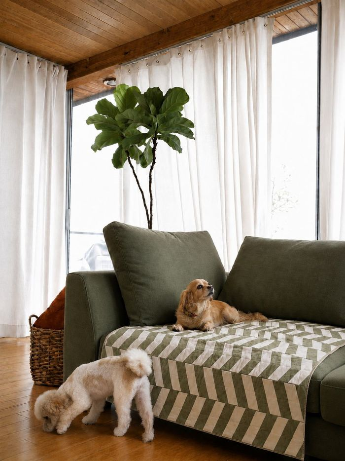
Furniture protector
Protects the sofa or bed beneath a favorite napping spot.
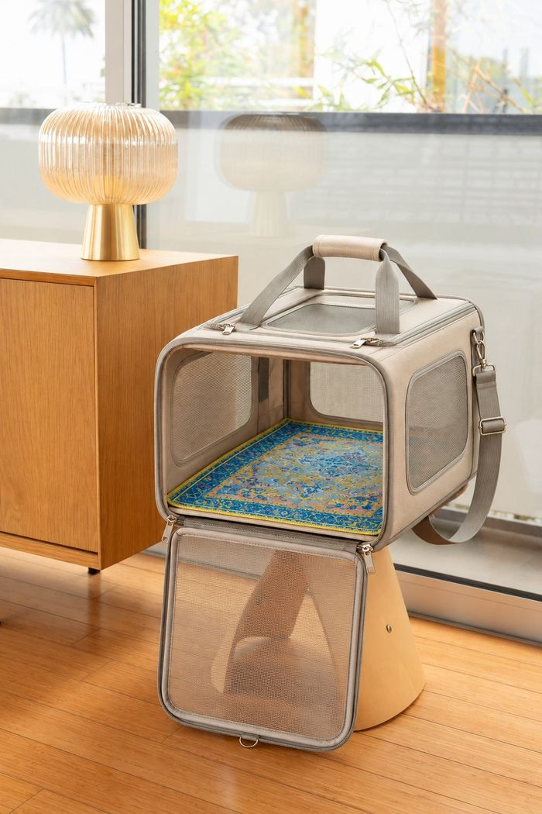
Carrier liner
A soft, easy-clean base for playpens and carriers.
How it works
Absorbs. Blocks.
Stays slim.
A slim, absorbent layer soaks it up. A waterproof layer helps stop it from passing through.
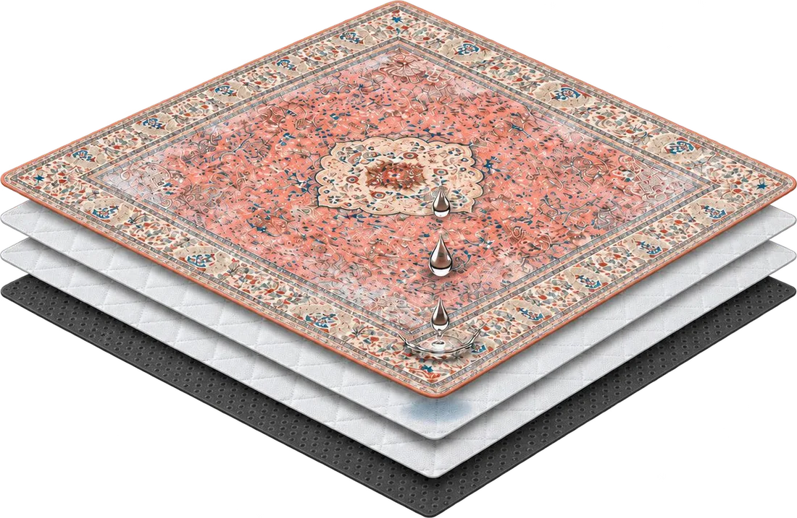
Four slim layers work together:
a soft, tear-resistant top printed with our designs, an absorbent layer that draws spills in, a waterproof TPU layer that helps keep liquids from reaching your floor, and a textured non-slip bottom that holds the mat in place.
Craft & Care
Made to be washed.
Machine washable
Wash, dry and put it back. Every mat is machine washable and dryer friendly.
Leak-proof
A waterproof TPU layer helps keep spills from reaching the floor beneath.
Non-slip
Textured grip dots on the back help hold the mat in place.
fits under doors
Slim and flat enough to slip under many doors.
Size guide
Find the right size for your space.
Five sizes, each made for a different corner of the home. Shown to scale.
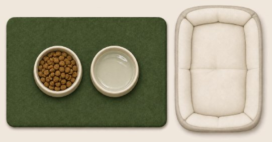
16 x 24 in
A feeding corner, carrier liner, or beside a small crate
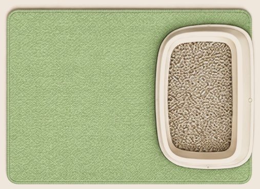
24 x 36 in
Beneath a litter box, or as a reusable pee pad for smaller dogs
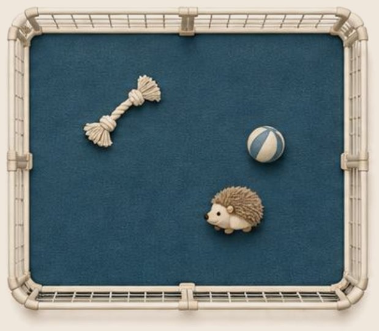
36 x 48 in
A generous base for large litter boxes, play pens, and favorite napping spots
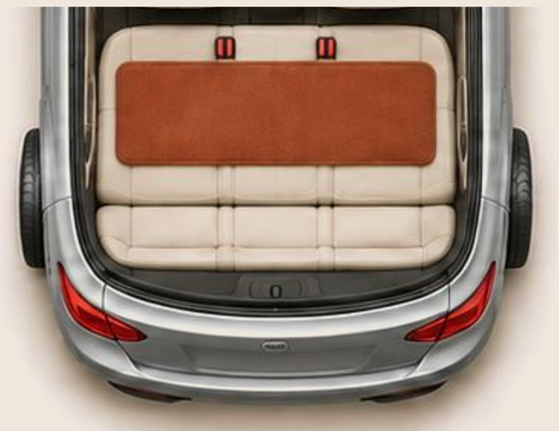
24 x 60 in
A runner for hallways, or along the length of a sofa
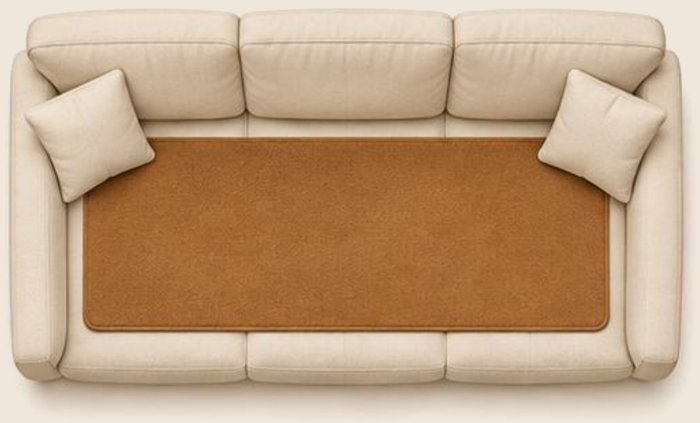
30 x 60 in
Wide coverage for large crates and open play areas
The designs
Designs that feel like home.
Choose a color story that belongs in your room.
photo]
Arles Bleu
photo]
Blue Citrine
photo]
Gilded Blossom
photo]
Hana Blush
photo]
Honey Harvest
photo]
Silvered Haze
photo]
Nordic Frost
photo]
Terracotta Capri
Where to buy
Find us.
Available through our retail partners and online.
Questions
Good to know.
Yes. Every mat goes straight into the washing machine on a gentle cycle and can be tumble-dried on low.
The absorbent layer draws liquid in and the waterproof TPU layer helps keep it from reaching the floor below.
Textured grip dots on the back help hold the mat steady on wood, tile and laminate.
Use the size guide above: 16 x 24 in for feeding corners up to 30 x 60 in for large crates and play areas.
Absolutely. The same mat works as a feeding mat today and a carrier liner or sofa protector tomorrow.
Explore more
One mat, many ways to use it.


For retailers
Bring The Avalon Society to your shelves.
Request access to our catalog, wholesale pricing and ordering.